民以食为天，在吃上面，灵山人民可是不容小觑的。灵山是著名的中国荔枝之乡、中国奶水牛之乡、中国养蛇之乡、
中国名茶之乡、此外灵山县也是久负盛名的水果之乡，水产之乡和鱼米之乡
一骑红尘妃子笑，无人知是荔枝来
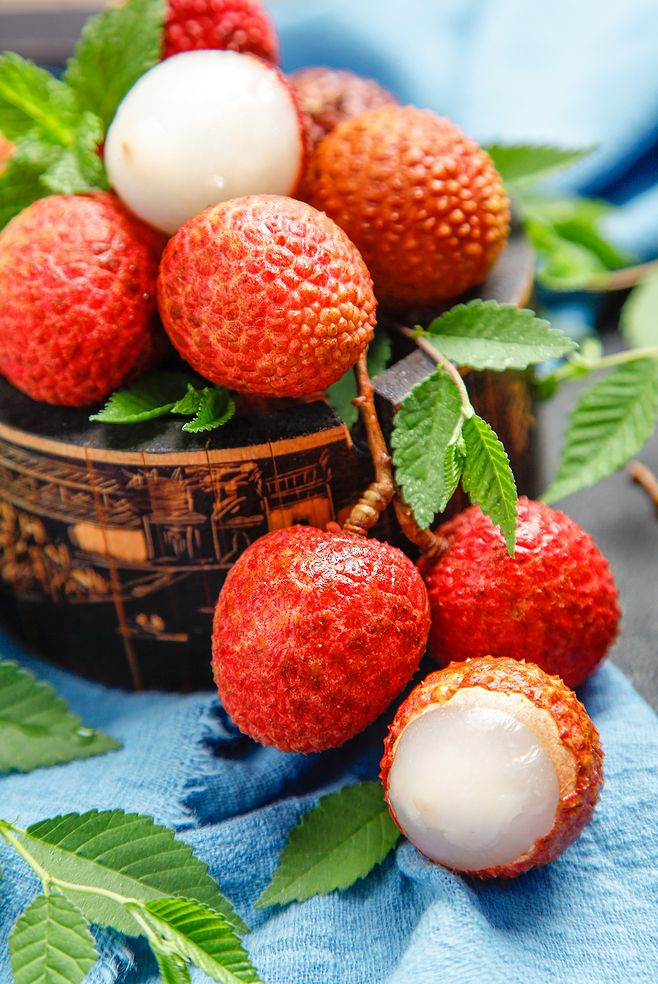
灵山是最适宜荔枝生长的黄金地带之一。始种于汉朝，现在无村不荔枝。主要品种是
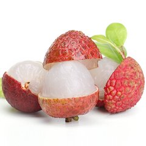
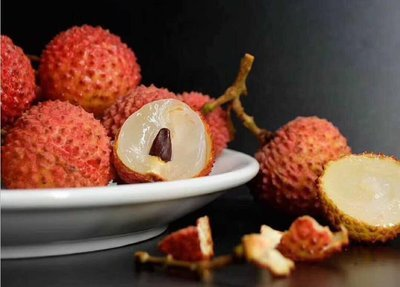
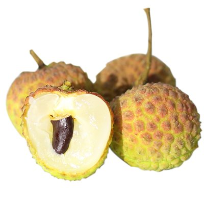
三月红、灵山香荔、桂味荔、妃子笑、
糯米糍、黑叶荔、鸡嘴荔
等。荔枝本是中华珍品、果中之王，灵山荔枝品质尤佳。其中：
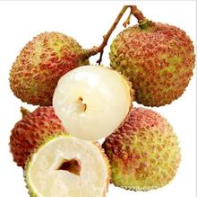
三月红
5月上、中旬成熟，甜带微酸，
100毫升果汁中含维生素C高达54.56-57.46毫克，酸0.32-0.37毫克，可食部分占全果重的62-68％。
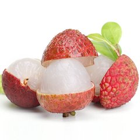
妃子笑
6月上旬成熟，
皮色淡红美观，皮薄、肉厚，肉质爽脆，清甜带香，可食部分占全果重的77.1-82.5％，种子较小，品质风味优良。
灵山香荔
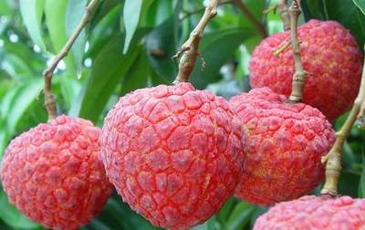皮红略带紫色，
肉白腊色，肉质爽脆，味甜带香，可食部分占全果重量的76.6％，种子多为焦核，品质上等。
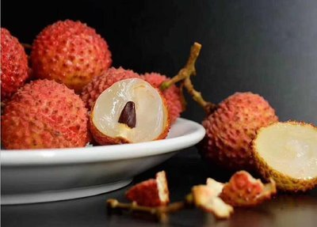
桂味荔
皮浅红色，
肉乳白色，清甜多汁，有桂花香味，可食部分占全果重75.80％，焦核占多，为鲜食最优质品种。
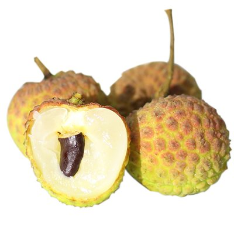
糯米糍
果皮鲜红，
肉厚黄白色，肉质软滑，汁多，味浓甜带微香，可食部分占全果重73.8-4.4％，种子小，品质风味极优。
水牛奶:
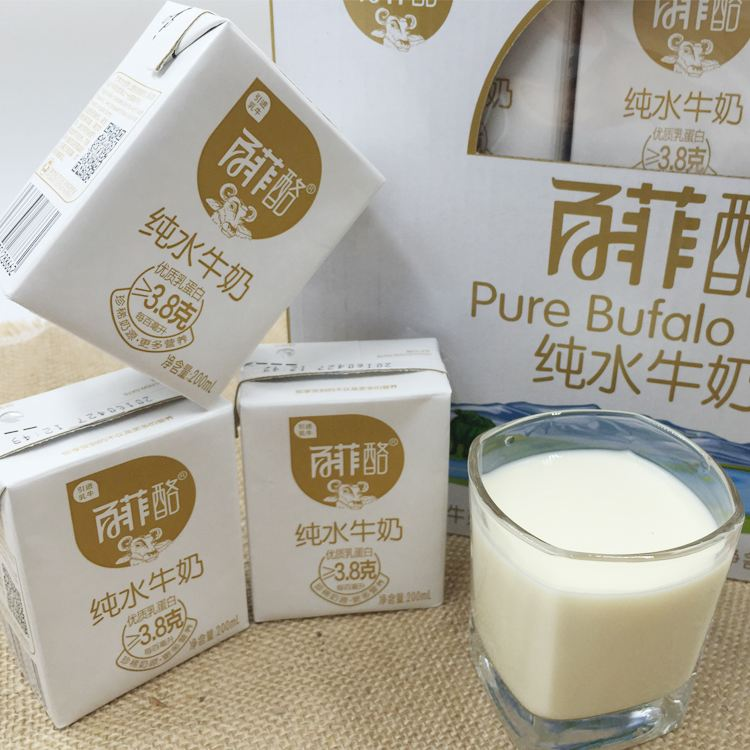
近期很火的水牛奶百菲酪就是出自灵山的十里工业园的
水牛奶的脂肪、蛋白质、乳糖的含量是黑白花牛奶的数倍，矿物质和维生素含量也是黑白花牛奶和人乳的数十倍。
香醇浓厚，胆固醇低，维生素、微量元素丰富，尤其是酪蛋白含量高，能进行高质量乳制品的深加工。
作为一类高级营养食品，水牛奶制品日渐成人们消费的“新宠”。水牛奶乳化特性好，100千克的水牛奶可生产25公斤奶酪，
而相同量的黑白花牛奶只能生产12.5公斤奶酪。此外，水牛奶矿物质含量和维生素含量也都优于黑白花牛奶和人乳，
铁和维生素A的含量分别是黑白花牛奶的约80倍和40倍，并被认为是最好的补钙、补磷食品之一。
灵山大粽:

灵山大粽是采用灵山优质龙渊野生大糯米,野生粽叶,板粟,虾米,猪肉等配料。根据民间传统工艺精制而成的民族特色产品。
该产品
“糯而不糊，肥而不腻，美味可口营养丰富，风味独特”
。具有悠久历史的民间传统小吃及送礼佳品。 据中医文献记载：包粽子的材料有“补中益气，固肾缩水”之良效。馅料当中的猪肉味甘，性平，能“补肾液， 充胃汁，滋肝阴，润肌肤，止消渴”，其中肥肉经高温蒸煮后饱和脂肪酸和胆固醇降低，不饱和脂肪酸增加， 食之“强身健脑，延年益寿。”采自天然野生环境的粽叶，则有“舒郁，开膈，灭菌防腐和防癌”的神奇功效。
灵山首届粽子节：
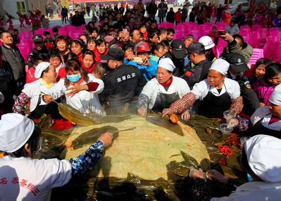
凉粽（灰水粽）：

凉粽主要是在广西才会做的粽子，每到端午节广西人一般都会吃凉粽，家里面家家户户都会包凉粽
凉粽水主要是用榕树的树叶等等制作的，都是比较干净的叶子生生从树上砍下来，然后将它晾一晾之后烧成灰，
将烧好的草木灰，用容器将用过滤得到的棕黄色的水来浸泡准备好的糯米。
经过浸泡后的糯米会透出一股草木灰特有的清香，包出的粽子经过煮熟后多呈淡黄色或者棕黄色
粉利：

粉利是广西传统小吃之一，主要分布桂北，桂南地区，“粉利”寓意来年有个好兆头之意。
灵山粉利以大米为主料，外加以各种辅料精制而成，色鲜味美、香滑爽口。
粉利是原生态的米制品，经过石磨磨成浆，然后经过蒸煮而成。广西地区一般会在过年期间食用粉利，以讨大吉大利之意。
粉利以前只是过年时才能吃到，现在一年四季都有了，灵山各地都可吃到。粉利吃法有：切片水煮或切丝加肉片青菜炒。
芝麻饼：

灵山芝麻饼是灵山县当地特产，皮薄馅厚，香脆可口。有南瓜馅、地瓜馅、虾仁馅、牛肉馅等各种芝麻饼，
更是让这一传统美食令人回味无比。
馅厚皮薄，馅鲜细腻，入口即化，皮酥清脆，营养丰富，香酥脆味具全的特色。
甜松脆，以片薄、芝麻足、天然香味浓郁，以南瓜馅、地瓜馅、虾仁馅、牛肉馅等为主的芝麻饼上市，
更是让这一传统美食令人回味无比。甚至还具有食疗的作用呢。
糍粑：

叶素糕是灵山的节日糕点，我们会在中秋节或者其他节日做这个糍粑。它是由香蕉叶包着放有豆子，芝麻，糖
，花生等的米苞，两个一串，仿佛像一对恩爱的夫妻，又像一对和睦的兄弟姐妹，又像一对好朋友。总之“叶素糕”
不仅味道独特，而且意义独特，送给亲朋好友最合适不过了。
制作传统的芭蕉叶糍粑，需要把浸泡过的的糯米用机器磨成米浆，把米浆装入布袋沥干水，揉成糯米团子，再用来制作糍粑。
簸箕粉：
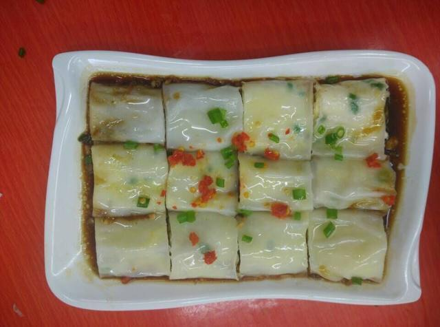
广西人是出了名的爱嗦粉，灵山人自然也是不能拖后腿的，灵山当地的早餐，以粉食为主。在众多粉类之中，
灵山人尤其喜爱最具当地特色的簸箕粉，簸箕粉现做现卖，在保证口感的同时又充满农家风味。簸箕粉类似广东的肠粉，
但做法跟所用的材料有所不同，比起肠粉，簸箕粉更加的原汁原味，风味独特。